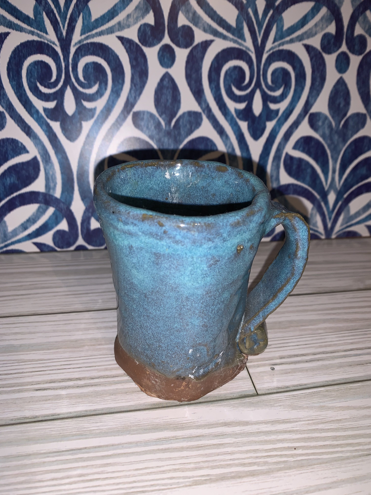

Ceramics has been one of those special experiences that leave a lasting life lesson as you learn more and more about it. For me my first time making something with clay showed me all the different ways things can last when being well taken care of though things can be very fragile. The mug pictured is my very first mug that was made using hand building techniques on an art club field trip to the Imperial Arts Center Rocky Mount, NC back when I was a freshman in highschool. I was given the opportunity to create the mug and later learn about the different stages of drying and types of cone firing needed for it to turn from a clay slab to a finished product. I was also informed about the different types of glazing techniques and the different changes it'd undergo to become that beautiful color. If given the opportunity I'd be more than happy to build my own ceramics studio just to continue studying pottery and ceramics. I will definitely say like painting and many other art forms ceramics is a very humbling art form, it takes a lot to understand clay in itself from the process of creating it, to the time it takes to wedge the clay to remove air bubbles before it's used as well as while using it. Without removing air bubbles the clay can become weak while sculpting, and if any bubbles aren't removed before firing the bubble will create pressure within the piece and could either crack or explode once fired.
